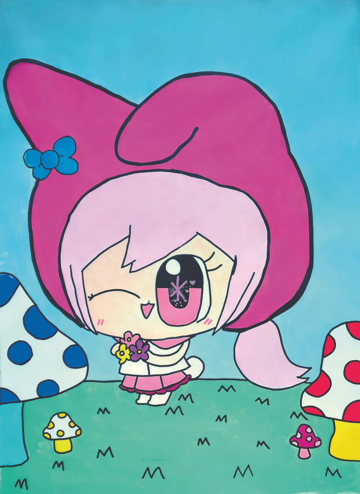

The Flatland Dream — 2025 Exhibition Recap

1. Is there anything you are enjoying or interested in the most these days?
These days, I enjoy drawing various idol characters the most, and I am also very interested in idol merchandise. I am interested in newly debuting idols, new albums, and idol news in general.
2. When do you find the process of making artwork the most fun?
I enjoy matching each idol member with an animal or item that suits them, and I also enjoy coloring with watercolors. I like listening to the soft scratching sound of colored pencils as I draw.
3. If there are any materials or characters that often appear in your artwork, what made you like them?
Idol characters appear often in my artwork. As I searched for idols on Namuwiki and learned more about them, I came to like them even more.
4. What are your favorite foods?
Fried chicken, cheese pizza, Ivy crackers, and tangerines.
5. What do you usually do on your days off?
I draw things I like in my sketchbook, and I also dance while listening to music.
6. Was there anything new you felt or remembered through the collaboration?
Seeing a similar style of drawing made me feel a sense of familiarity, and if I have the chance, I would like to collaborate on other drawings as well.
7. Is there any artwork you would like to make someday, or any style of expression you would like to try?
I would like to gather the characters I have drawn so far and draw them on an iPad to create a poster. I also want to make a 2D animation. I would like to cast voice actors and match them with each character.

1. 요즘 가장 즐겁게 하고 있는 일이나 관심 있는 것이 있다면 무엇인가요?
요즘 다양한 아이돌 캐릭터를 그리는것이 가장 즐겁고, 아이돌 굿즈상품에도 관심이 많아요. 새롭게 데뷔하는 아이돌, 신규앨범들 아이돌 전반적인 뉴스에 관심이 많습니다.
2. 작품을 만들 때 가장 재미있다고 느끼는 순간은 언제인가요?
각각의 아이돌맴버와 어울리는 동물, 아이템을 매칭하는것도 재밌고, 수채화로 채색하는 것도 재밌어요. 색연필로 사각사각 그려내는 소리를 듣는것도 좋아해요.
3. 작품 속에 자주 등장하는 소재나 캐릭터가 있다면, 그것을 좋아하게 된 이유가 궁금합니다.
아이돌 캐릭터가 주로 등장하고 있습니다. 나무위키에서 아이돌에 대해 검색하면서 더욱 잘 알게되어 더욱 좋아졌습니다.
4. 좋아하는 음식이 있다면 알려주세요.
후라이드치킨, 치즈피자, 아이비, 귤
5. 쉬는 날에는 주로 무엇을 하며 시간을 보내나요?
스케치북에 좋아하는 것을 그리기도 하고, 음악을 들으며 춤을 추기도 해요.
6. 협업을 통해 새롭게 느끼거나 기억에 남은 점이 있다면 무엇인가요?
비슷한 그림을 보니, 친근감이 느껴지고 기회가 된다면 다른 그림도 같이 협업해보고 싶어요.
7. 앞으로 꼭 한번 만들어보고 싶은 작품이나 도전해보고 싶은 표현 방식이 있나요?
지금까지 그린 캐릭터를 모아서 아이패드로 그려서 포스터를 그려보고 싶어요. 2D 애니메이션도 제작하고 싶어요. 성우로 캐스팅해서 각 캐릭터들에게 매칭해주고 싶어요.